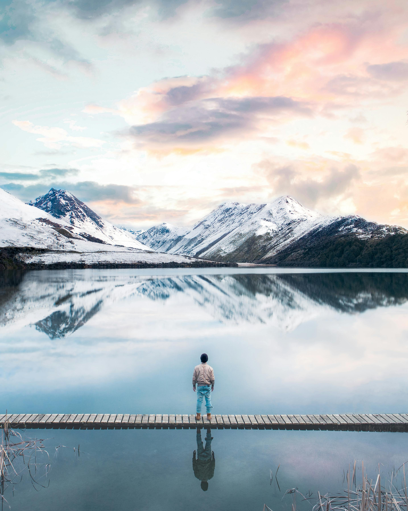
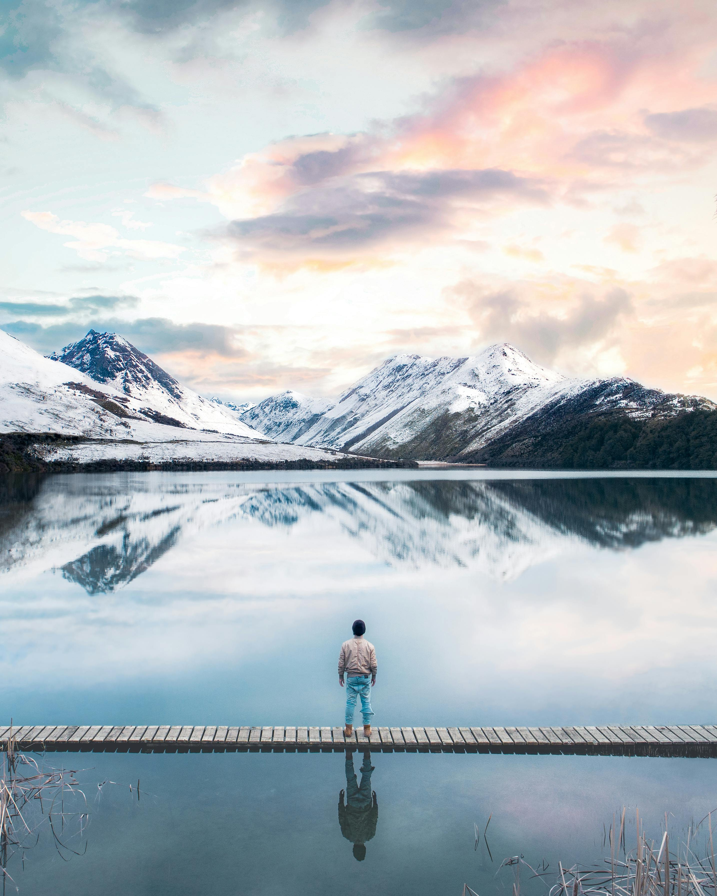

ADVENTURES SPORTS
Adventure Time!
Adventure sports encompass a wide range of thrilling activities that push the
boundaries of physical and mental endurance, offering an adrenaline rush like
no other. From scaling towering cliffs to diving into the depths of the ocean,
these sports provide a unique opportunity to connect with nature, challenge oneself,
and explore the limits of human capability.
Here are some popular adventure sports that enthusiasts around the world pursue:
1. Rock Climbing
2. River Rafting
3. Sky diving
4. Paragliding
5. Ice Climbing
Rock Climbing
Rock climbing is a sport in which participants climb up, across, or down natural rock formations or indoor climbing walls. The goal is to reach the summit of a formation or the endpoint of a usually pre-defined route without falling. Rock climbing is a physically and mentally demanding sport, one that often tests a climber's strength, endurance, agility and balance along with mental control. Knowledge of proper climbing techniques and the use of specialized climbing equipment is crucial for the safe completion of routes. Because of the wide range and variety of rock formations around the world, rock climbing has been separated into several different styles and sub-disciplines,[1] such as scrambling, bouldering, sport climbing, and trad (traditional) climbing.
River Rafting
Rafting and whitewater rafting are recreational outdoor activities which use an inflatable raft to navigate a river or other body of water. This is often done on whitewater or different degrees of rough water. Dealing with risk is often a part of the experience. This activity as an adventure sport has become popular since the 1950s, if not earlier, evolving from individuals paddling 10 feet (3.0 m) to 14 feet (4.3 m) rafts with double-bladed paddles or oars to multi-person rafts propelled by single-bladed paddles and steered by a person at the stern, or by the use of oars
Sky Diving
Skydiving is parachuting (jumping) from an airplane for fun. Skydiving can be done individually and with groups of people. Training is required. Unlike most paratroopers, skydivers often wait until they are low, before opening the parachute. The jump can also be made from a helicopter or a balloon that is high enough in the sky. Skydiving can be an exciting sport. Skydiving includes free falling (usually from an airplane) through the air prior to opening a parachute. Typically skydives are carried out from around 4,000m (or 12,500ft) offering 40 to 50 seconds of freefall time. Longer free fall times can be achieved by exiting an aircraft at altitudes much higher than 4,000m, but very high jumps require pressurized air within the aircraft, and bottled oxygen for the diver.
Paragliding
Paragliding is the recreational and competitive adventure sport of flying paragliders: lightweight, free-flying, foot-launched glider aircraft with no rigid primary structure.[1] The pilot sits in a harness or in a cocoon-like 'pod' suspended below a fabric wing. Wing shape is maintained by the suspension lines, the pressure of air entering vents in the front of the wing, and the aerodynamic forces of the air flowing over the outside. Despite not using an engine, paraglider flights can last many hours and cover many hundreds of kilometres, though flights of one to five hours and covering some tens of kilometres are more the norm. By skillful exploitation of sources of lift, the pilot may gain height, often climbing to altitudes of a few thousand metres.
Ice Climbing
Ice climbing is a climbing discipline that involves ascending routes consisting of frozen water. To ascend the route, the ice climber uses specialist equipment, particularly double ice axes (or the more modern ice tools) and rigid crampons. To protect the route, the ice climber uses steel ice screws that require skill to employ safely and rely on the ice holding firm in any fall. Ice climbing routes can vary significantly by type, and include seasonally frozen waterfalls, high permanently frozen alpine couloirs, and large hanging icicles.